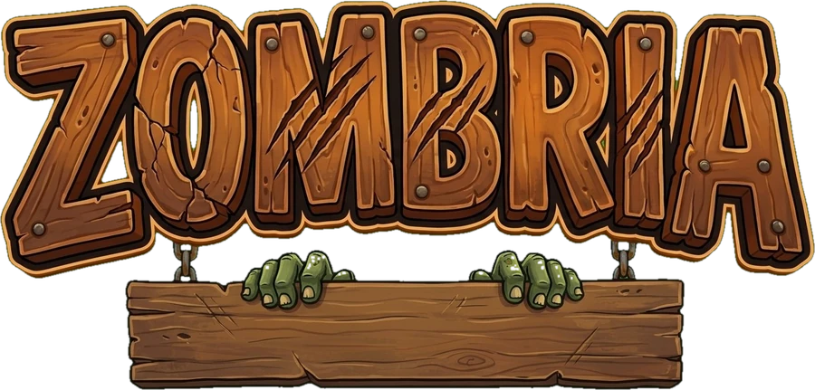

Privacy policy
Last updated: November 16, 2026 · Version française
In short
- No account, no name, no email address required.
- No ads, no cookies, no trackers, no selling of data.
- Your game is saved on your device. The server only keeps what is needed for leaderboards, clans and chat, under a randomly generated identifier and the username you choose.
- Everything is hosted in France (o2switch, Clermont-Ferrand).
Data controller
The site’s publisher (see the legal notice). Contact: contact@zombria.com.
1. On your device (never sent as is)
The game uses the browser’s local storage (localStorage) to work: your current game, your record, your achievements, your settings (sound, music, vibration, mature content, language), your family’s names, your username, your avatar, your frame, your game history. These are not cookies and are not used for any tracking. You can erase everything at any time by deleting the site’s data in your browser (you will then lose your progress).
2. On the game server
This information is sent only for online features:
| What | Why | How long |
|---|---|---|
| A randomly generated device identifier (it says nothing about you) | Recognize your device without an account | As long as your data exists |
| Your username, your avatar (a portrait from the game) and your frame | Leaderboards, clans, chat | As long as you appear on the leaderboard or in a clan |
| Your scores and game figures (days survived, points, zombies killed, deaths, games, achievements, stars…) | General and monthly leaderboard, Legend of the Month, “Right now” figures, profile seen by your clan | Leaderboard: the top 1,000; world figures: as long as the device keeps checking in |
| Your clan: membership, deposits and withdrawals from the stockpile, assaults, trades, raid participation | Run clans and wars | As long as the clan exists (log: the last 40 lines) |
| Your messages in the clan chat | Chat between members | The clan’s last 100 messages; you can delete your own |
| Your invite code and the codes used | Referrals and packages | As long as the referral is active |
| Your feedback and reports (“Feedback” form) and, only if you tick the box, your username and technical info: game day, screen size, browser type, game screen. Each message is also forwarded by email to the publisher | Fix bugs, moderate, reply to you and, if needed, send back in the game what a bug made you lose (gift kept until you collect it) | The last 500 messages |
A username or message containing an insult is automatically refused or hidden. Reported messages are read by the publisher for moderation.
2 bis. If you sign in with Google (optional)
The account is only used to find your game on another device. When you sign in, Google sends the game a proof of sign-in, which the server checks. The server then keeps: your Google identifier (a number, not your email address), the first name shown by Google, your player identifier, the account creation date, the list of devices used (their random identifiers) and a copy of your save (the game data kept in your browser: current game, record, achievements, statistics, settings…), plus a session token. Only one session is open at a time.
You can sign out, or delete your account at any time from “My profile”: the account and its save are deleted from the server immediately (your game stays on your device). Google may also know that you signed in to the game, according to its own privacy policy.
3. Technical data
Like any website, the host records the IP address and time of connections in its technical logs, for security and proper operation of the service. The game’s administration also keeps, for 15 minutes at most, the number of failed password attempts per IP address (protection against intrusions).
The game’s fonts (Bangers and Nunito) are hosted on zombria.com: no outside service is contacted to display them.
Advertising: the game page loads the Google AdSense code (Google Ireland Limited), in preparation for rewarded ads (watching a short ad for a small bonus, always optional). In doing so, your browser sends your IP address to Google. No ads are shown yet. When they are, a window will ask for your consent to advertising cookies, and this page will be updated. Learn more: policies.google.com/technologies/ads.
Legal basis
This processing is based on the publisher’s legitimate interest in running the game and the online features you choose to use (leaderboard, clans, chat, referrals, feedback), and on your consent for sending technical info with feedback.
Sharing
No data is sold or passed on to third parties for commercial purposes. Your username, avatar and scores are visible to other players on the leaderboards; your messages and clan activity are visible to your clan members. Data is hosted by o2switch in France.
Your rights
Under the GDPR and the French Data Protection Act, you can ask to access, correct or delete your data, or object to its processing. Write to contact@zombria.com giving your username (and, if possible, the date of your last game) so we can find your device. You can also file a complaint with the CNIL, the French data protection authority (www.cnil.fr).
Minors
The game asks for no identity information. We advise against using your real name as a username and against ever sharing personal information in the clan chat.
Changes
This page may change, for example if player accounts or advertising are ever added. The date of the last update is shown at the top.